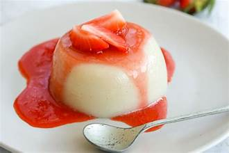
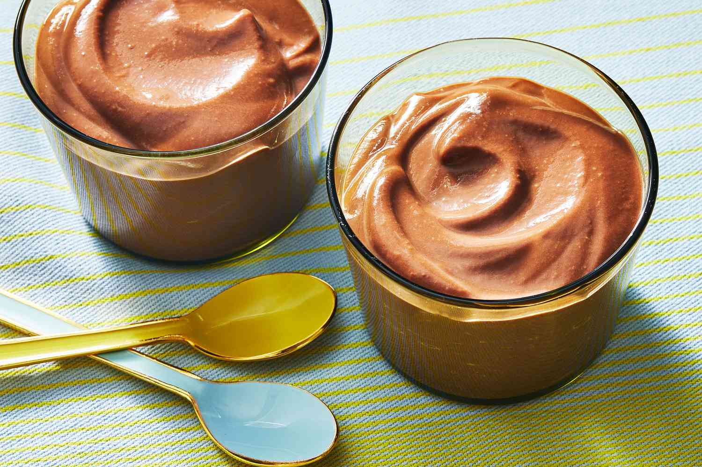
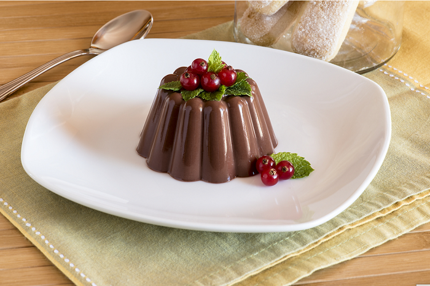

Pudding là món tráng miệng mềm mịn, béo ngậy và tan chảy trong miệng,
rất được yêu thích trên toàn thế giới. Với nhiều biến tấu hương vị, từ
vani truyền thống đến chocolate, trái cây, pudding luôn mang đến cảm
giác ngọt ngào và dễ chịu, là lựa chọn hoàn hảo để kết thúc bữa ăn hoặc
làm món ăn vặt nhẹ nhàng.



Nguyên liệu
Sữa tươi: 500ml sữa tươi không đường (có thể dùng sữa
tươi nguyên kem để pudding béo hơn).
Đường: 50g đường cát trắng (điều chỉnh tùy theo khẩu
vị ngọt của bạn).
Gelatin: 10g bột gelatin (hoặc 4 lá gelatin, tương
đương khoảng 14-16g lá gelatin).
Lòng đỏ trứng gà: 2 lòng đỏ trứng gà (giúp pudding
mềm mượt và có màu vàng đẹp).
Tinh chất vani: 1 muỗng cà phê (để tạo mùi thơm đặc
trưng).
Kem tươi (Whipping Cream): 100ml (tùy chọn, thêm vào
để pudding béo ngậy và mềm hơn).
Nước lạnh: 50ml (để ngâm bột gelatin) hoặc đủ để ngâm
lá gelatin.
Sốt trang trí: Caramel, sốt chocolate, sốt dâu, sốt
việt quất hoặc trái cây tươi cắt nhỏ để rưới lên mặt (tùy chọn).
Cách làm
Bước 1: Chuẩn bị gelatin
Nếu dùng bột gelatin: Cho 10g bột gelatin vào một bát nhỏ, thêm
50ml nước lạnh vào, khuấy đều và để yên khoảng 5-10 phút cho
gelatin nở hoàn toàn và đông lại.
Nếu dùng lá gelatin: Ngâm 4 lá gelatin vào một bát nước lạnh lớn
khoảng 5-10 phút cho lá mềm. Khi gelatin mềm, vớt ra, vắt nhẹ
nhàng để loại bỏ bớt nước thừa.
Bước 2: Đánh hỗn hợp trứng và đường
Trong một tô lớn, cho 2 lòng đỏ trứng gà và 50g đường vào.
Dùng phới lồng hoặc máy đánh trứng đánh đều hỗn hợp cho đến khi
đường tan hoàn toàn và hỗn hợp chuyển sang màu vàng nhạt, hơi bông
xốp.
Bước 3: Đun sữa và hòa tan gelatin
Trong một nồi nhỏ, cho 500ml sữa tươi vào. Đun sữa trên lửa nhỏ
đến khi sữa nóng già, bốc hơi nhẹ (khoảng 70-80°C), không để sữa
sôi bùng.
Tắt bếp. Cho gelatin đã ngâm nở (bột gelatin đã đông hoặc lá
gelatin đã vắt khô) vào nồi sữa nóng. Khuấy đều liên tục cho
gelatin tan hoàn toàn và hòa quyện vào sữa.
Nếu dùng kem tươi (whipping cream), bạn có thể thêm 100ml kem tươi
vào nồi sữa và khuấy đều.
Bước 4: Trộn hỗn hợp pudding
Từ từ đổ hỗn hợp sữa nóng (đã có gelatin) vào tô lòng đỏ trứng đã
đánh, vừa đổ vừa khuấy đều tay liên tục. Việc này giúp trứng không
bị chín đột ngột và hỗn hợp hòa quyện mịn màng.
Lọc hỗn hợp pudding qua rây lọc để loại bỏ cặn hoặc bọt khí, giúp
pudding mịn màng hơn.
Bước 5: Đổ khuôn và làm lạnh
Rót hỗn hợp pudding đã lọc vào các khuôn (ly thủy tinh, khuôn
silicon, chén nhỏ) đã chuẩn bị.
Để hỗn hợp nguội hoàn toàn ở nhiệt độ phòng.
Sau đó, cho các khuôn pudding vào tủ lạnh, làm lạnh ít nhất 3-4
tiếng hoặc tốt nhất là qua đêm cho pudding đông lại hoàn toàn và
có độ đông mong muốn.
Bước 6: Hoàn thiện và thưởng thức
Khi pudding đã đông, bạn có thể úp ngược khuôn ra đĩa (nếu dùng
khuôn cứng) hoặc dùng muỗng múc ra ly.
Rưới sốt caramel, sốt chocolate, sốt trái cây hoặc đặt vài lát
trái cây tươi lên trên mặt để trang trí và tăng thêm hương vị.
Thưởng thức Pudding lạnh để cảm nhận trọn vẹn vị béo ngậy, mềm mịn
và thanh mát.
Mẹo nhỏ để Pudding ngon hơn:
Gelatin: Đảm bảo gelatin đã nở hoàn toàn và tan hết
trong sữa nóng để pudding đông đều và không bị lợn cợn. Nếu dùng lá
gelatin, vắt thật ráo nước trước khi cho vào.
Nhiệt độ sữa: Không đun sôi sữa vì sẽ làm mất đi vị
ngọt tự nhiên và có thể làm gelatin mất tác dụng. Chỉ cần đun nóng
già là đủ.
Trộn trứng với sữa: Khi đổ sữa nóng vào trứng, hãy
đổ từ từ và khuấy nhanh tay để trứng không bị vón cục.
Lọc hỗn hợp: Lọc hỗn hợp qua rây giúp loại bỏ bọt
khí và cặn, làm pudding mịn màng hơn.
Thời gian làm lạnh: Pudding cần đủ thời gian trong
tủ lạnh để đông hoàn toàn và đạt được kết cấu chuẩn. Ít nhất 3-4
tiếng, tốt nhất là qua đêm.
Sáng tạo hương vị: Bạn có thể biến tấu pudding với
nhiều hương vị khác nhau bằng cách thêm bột cacao, bột trà xanh
matcha, cà phê hòa tan, hoặc các loại siro trái cây vào hỗn hợp sữa
khi đun.
Trang trí: Sốt caramel, sốt chocolate, hoặc trái
cây tươi là những lựa chọn tuyệt vời để trang trí và tăng thêm hương
vị cho pudding.
Bình luận và Đánh giá
Đánh giá của bạn
Chưa có bình luận nào.